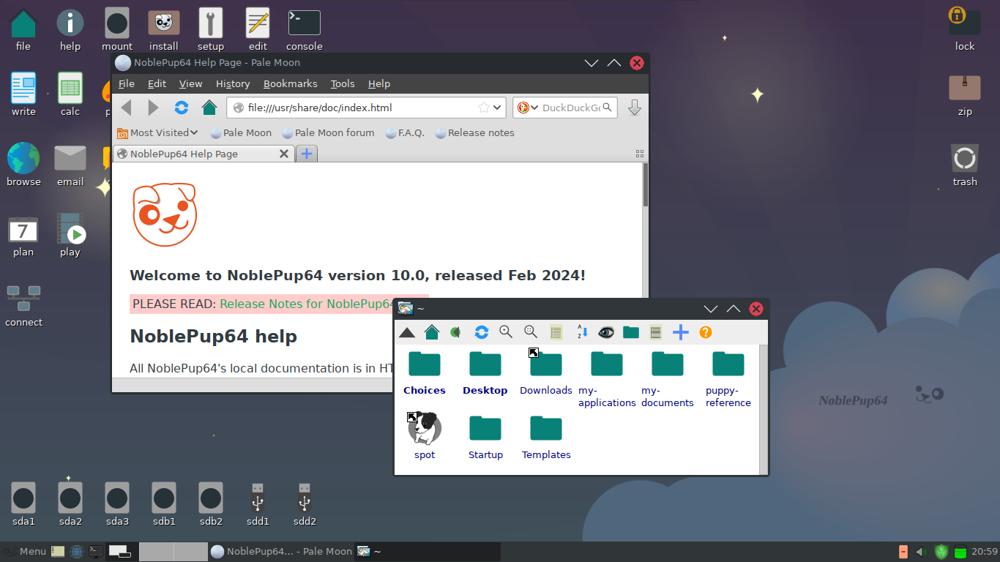

Puppy Linux is a family of Linux distributions focused on ease of use, being lightweight, and customizability. For more information, see the official website.
Woof-CE is a tool used to build a Puppy Linux distribution from the packages of another Linux distribution, for example, Ubuntu. For more information, see the webpage and GitHub repository.
NoblePup64 is a 64-bit Puppy Linux distribution that is built from, and compatible with Ubuntu 24.04 packages.
Status: Alpha, please see the release notes on GitHub.
Download NoblePup64 here.
